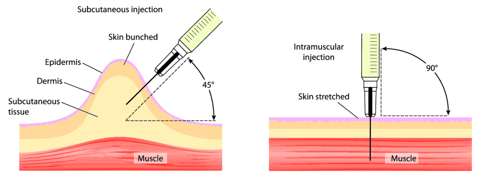

Last Updated: 31/07/2024
So, you wish to lean about injections. There is some things you should know before starting, there is two methods of injecting the medication. There is "Intramuscular" also referred to as "IM" and there is "Subcutaneous" or "SubQ", with IM injections you are going into your muscle and with SubQ you are going into the fatty layers.
Below is a small diagram on the differences between the two injection methods.
(To note there is no concrete evidence on if any method is better it is just personal preference)
Before you inject if you haven't I recommend reading HRT Injections Overview, Injection Practices for Safety and Things That Can Occur When Injecting as they will give you a better understanding of injections. Moving on when you are ready to inject just remain calm and watch a few videos online or ask for advice if you need it, it is really hard to mess up injections, but it can be really daunting at first. Below are a few videos for both IM and SubQ injections which helped me out a lot.
Wash and disinfect your hands with soap and hand sanitiser.
Always use clean sterile needles, if you touch it even if you are fully disinfected swap needles. You don't want to risk an infection it's not worth it.
Always clean the rubber stopper where you put the needle through to ensure it is fully disinfected.
When injecting you could bleed this is due to hitting a capillary aka small blood vessels. If you do bleed it's mostly harmless you will bruise, and it might take a couple of weeks to heal.
In you are doing SubQ small bumps are common and harmless and go away after a while, ways to resolve this issue are to inject deeper.
Skin irritation is common with SubQ injections this is due to the preservative used in the medication another harmless. To resolve swap from SubQ to IM injections.
Depending on what method of administering your medication be it IM or SubQ they differ but have some overlap e.g. syringes and drawing needles will be the same. However, the needles their thickness and length may vary. Below will be a supplies, so you know what to look for in case a vendor isn't listed for you or stock issues. If you cannot find a country for shipping, most of these vendors ship from to other EU countries.
Syringe: 1ml Luer Lock or 1ml Luer Slip (Preferably Luer Lock)
Drawing Needle: 21G-23G 1.5" Needle
Injection Needle: 25G-27G 1" Needle (Note: For SubQ you will need a 0.5"/12.7mm or 5/8"/15.8mm Needle)
Fixed Syringe: IM: 25G-27G 1" 1ml | SubQ: 29G-30G 0.5"/12.7mm or 5/8"/15.8mm 1ml
Rubbing alcohol or alcohol wipes for disinfecting vial and injection site.
Band-aids or Plasters to plop on the injection site in case of a bleeder.
(Note: You do not need everything here on this list, fixed syringes comes with the syringe and needle fixed together or if you go without wanting to use a drawing needle you do not need to buy them drawing needles are recommended if you have issues with injecting with a partially blunt needle e.g. easily bruising/bleeding.)
Fixed Needles: IM: 25g 1" 1ml (100x is £15.54) | SubQ: 29g 0.5" 1ml (100x is £16.80)
Syringe: 1ml Luer Lock Syringe (100x is £11.40)
Drawing Needle: 22g 1.5" Needle (100x is £3.34)
Injecting Needles: IM: 25g 1" Needle (100x is £9.60) | SubQ: 27g 0.5" Needle (100x is £9.60)
Fixed Needles: IM: N/A | SubQ: 29g 0.5" 1ml (100x is €17.50)
Syringe: 1ml Luer Slip Syringe (100x is €10.29)
Drawing Needle: 22G 1.5" Needle (100x is €3.99)
Injection Needle: 25g 1" Needle (100x is €3.99)
Fixed Needles: IM: N/A | SubQ: 29G 0.5" 1ml (100x is DKK 302,50)
Syringe: N/A
Drawing Needle: N/A
Injection Needle: N/A
Fixed Needles: IM: N/A | SubQ: 29G 0.5" 1ml (100x is €32.50)
Syringe: 1ml Luer Slip Syringe (100x is €16.26)
Drawing Needle: 21g 1.5" Needle (100x is €5.53)
Injection Needle: 25G 1" Needle (100x is €5.53) | SubQ: 25G 5/8" Needle (100x is €5.53)
Fixed Needles: IM: N/A | SubQ: 26G 0.5" 1ml (100x is €20.63)
Syringe: 1ml Luer Slip Syringe (120x is €16.10)
Drawing Needle: 21G 1.5" Needle (100x is €5.57)
Injection Needle: IM: 25G 1" Needle (100x is €5.50) | SubQ: 25G 5/8" (100x is €5.96)
Fixed Needles: IM: N/A | SubQ: 29G 0.5" 1ml (100x is €25.40)
Syringe: 1ml Luer Slip Syringe (100x is €20.30)
Drawing Needle: 22G 1.5" Needle (100x is €5.57)
Injection Needle: IM: 25G 1" Needle (100x is €9.15) | SubQ: 25G 5/8" (100x is €9.70)
Fixed Needles: IM: N/A | SubQ: 29G 0.5" 1ml (100x is €8.97)
Syringe: 1ml Luer Slip Syringe (100x is €6.28)
Drawing Needle: 22G 1.5" Needle (100x is €3.65)
Injection Needle: IM: 25G 1" Needle (100x is €3.25) | SubQ: 25G 5/8" (100x is €3.16)
Fixed Needles: IM: N/A | SubQ: 27G 0.5" 1ml (100x is €22.80)
Syringe: N/A
Drawing Needle: N/A
Injection Needle: IM: N/A | SubQ: N/A
Fixed Needles: IM: N/A | SubQ: 29G 0.5" 0.5ml (10x is 83.20 - 163.90 UAH)
Syringe: N/A
Drawing Needle: N/A
Injection Needle: N/A
Fixed Needles: IM: N/A | SubQ: 29G 0.5" 0.5ml (10x is 248₽) or 29G 0.5" 1ml (100x is 933₽)
Syringe: N/A
Drawing Needle: N/A
Injection Needle: N/A
Fixed Needles: IM: N/A | SubQ: 29G 0.5" 1ml (100x is $18.99)
Syringe: Luer lock 1ml Syringe (50x is $15.99)
Drawing Needle: 22G 1.5" Needle (50x is $9.98)
Injection Needle: IM: 25G 1" Needle (50x is $9.98) | SubQ: 25G 5/8" Needle (50x is $9.98)
Fixed Needles: IM: N/A | SubQ: 28G 0.5" 1ml (100x is $24.45 CAD)
Syringe: 1ml Luer Lock Syringe (50x is $33.59 CAD)
Drawing Needle: 22G 1.5" Needle (100x is $20.06 CAD)
Injection Needle: IM: 25G 1" Needle (100x is $28.39 CAD) | SubQ: 25G 5/8" Needle (100x is $38.67)
(Note: This website is a nightmare to search for products, if you find a great listing for products feel free to send an email, so I can update this section.)
Fixed Needles: IM: N/A | SubQ: N/A
Syringe: N/A
Drawing Needle: N/A
Injection Needle: IM: N/A | SubQ: N/A
Fixed Needles: IM: N/A | SubQ: 27G 0.5" 1ml (100x is $29.95 AUD)
Syringe: 1ml Luer Slip Syringe (100x is $18.70 AUD)
Drawing Needle: 22G 1.5" Needle (100x $4.45 AUD)
Injection Needle: IM: 25G 1" Needle (100x is $3.90 AUD) | SubQ: 27G 0.5" Needle (100x is $4.45 AUD)
Fixed Needles: IM: N/A | SubQ: 29G 0.5" 1ml (10x is $5.33 NZD)
Syringe: N/A
Drawing Needle: N/A
Injection Needle: IM: N/A | SubQ: N/A